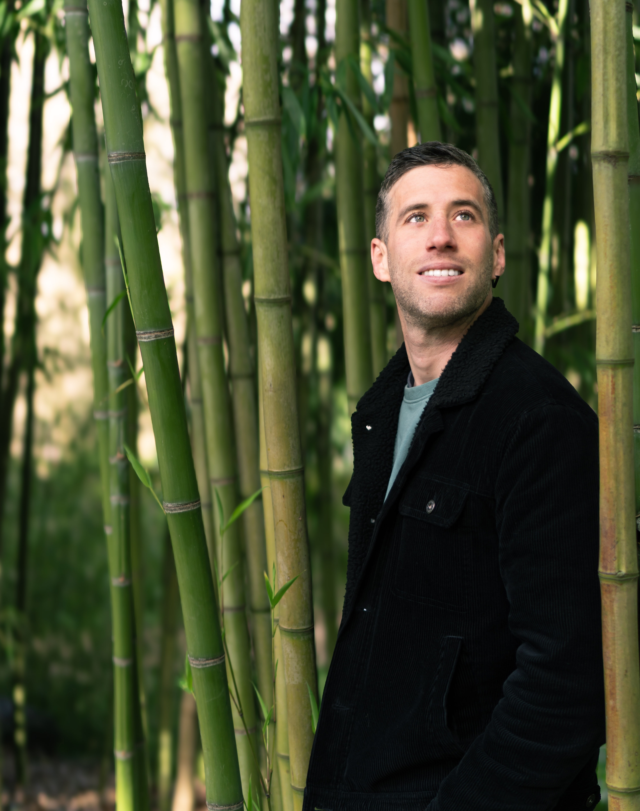

Hola! ¡Bienvenid@ a mi portfolio!
Soy un videógrafo asentado en Asturias y disfruto plasmando lo que más me inspira, la naturaleza y el deporte.
Todo comenzó con la bicicleta de montaña ,cuando un grupo de amigos creamos "Freeride Spirit" en 2006, un proyecto enfocado en este deporte, pero que a lo largo de los años empezó a diversificarse en otras temáticas, otros deportes y otras inquietudes audiovisuales.
Años más tarde, tras una época en la que llegué a profesionalizar esta pasión, me di cuenta de que este proyecto audiovisual ha mutado, ha cambiado. En pocas palabras, ha sido un reflejo de las distintas etapas de mi vida.
Por eso, a día de hoy, me gusta presentar esta página como una visión personalista, mostrar a los demás lo que me fascina en la vida, las vivencias personales, la naturaleza, el deporte.